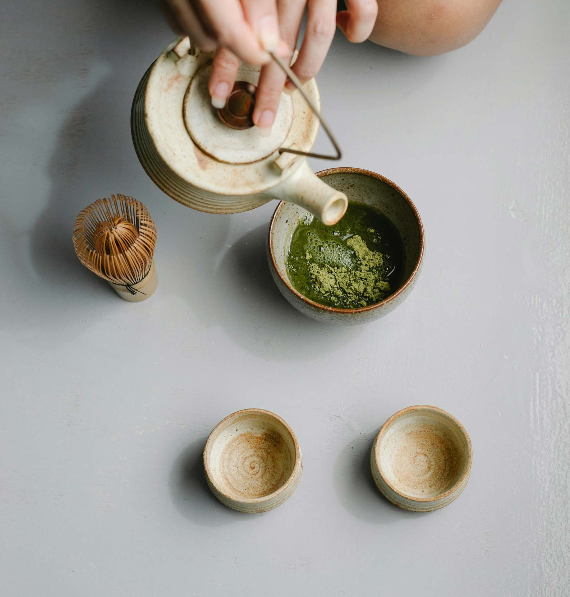

自室町幕府（1392～1573年）時代，天下大亂，戰事頻仍。 在此背景下，刀的鍛造技術獲得巨大進步，各式劍法與格鬥術也先後誕生， 並形成了「新陰流」、「一刀流」等具代表性流派。
首頁/所有主題/傳統運動
日本擁有許多傳統運動，這些運動大多源於古代武士階層的訓練和競技活動，後來逐漸演變成為大眾
運動和娛樂活動，並且在現代社會中繼續保持著重要的地位。
每種傳統運動都蘊含著豐富的文化和歷史內涵，體現了日本傳統武士精神和道德價值觀。
通過練習這些運動，人們不僅能鍛鍊身體和精神，還能更深入地體驗日本文化的獨特魅力，了解其對和
諧、紀律、尊重和努力的追求。

Kendo
劍道
劍道（日語：剣道／けんどう Kendō）
是將日本劍術加以競技化形成的武術運動。
正式比賽通常在室內進行，因選手赤足，對場地木地板的品質有較高要求。
選手一對一進行比賽，雙方均穿劍道服、戴護具、持竹劍，
按規則相互擊打有效部位（頭部、手腕及腰部），由裁判計點數判勝負。
亦可舉行團體比賽，由選手數相等的團體雙方分別一對一決出勝負後計算總分。


劍道與武士的關係密不可分，可以說劍道便是由武士們發展出來的。 日本地形多山，容易形成地方割據勢力，而地域相對狹窄，資源有限，又使得地方勢力對內講求協作，對外強調競爭， 因此地方勢力之間容易發生衝突，專業的武士階層便應運而生。

劍道之劍法，分為身法、刀法、心法，相對身體、技能之形體， 精神層面的心法修煉更為重要、嚴格，「殘心」便是其一種體現。 依《日本國語大辭典》解釋，「殘心」原為對某事務感到尚未滿足之意， 用於武道、藝道上，則是要求達到警戒的一種身心狀態。
推薦行程
Recommendations

京都-品味優雅茶道之3日行
讓您深入了解茶道的藝術與禮儀，感受其中的優雅與精緻。並感受到京都的傳統文化和美學所帶來的深刻啟示。

島根-藝術與禪庭園4日旅
這趟旅程提供豐富的視覺和精神享受，讓您深入了解島根的文化和美學，是一次完美的文化與禪庭園之旅。

大阪-歌舞伎之美3日行
這趟旅程將讓您充分領略大阪的歌舞伎藝術與傳統表演，並品嚐到當地的特色美食，感受大阪的多元文化和豐富的藝術氛圍。

京都-品味優雅茶道之3日行
讓您深入了解茶道的藝術與禮儀，感受其中的優雅與精緻。並感受到京都的傳統文化和美學所帶來的深刻啟示。

東京-國技相撲體驗4日之旅
作為國技，相撲在日本文化中具有重要地位，這趟東京相撲鑒賞之旅將讓您親身體驗這項傳統運動的獨特魅力和歷史。

Sumo Wrestling
相撲
相撲（日語：相撲／すもう sumō）是日本傳統
的神道儀式與體術，由兩名力士裸露上身，互相角力。
由神道的占卜神事發展而成，作為專業競技項目，則稱為大相撲。
相撲是日本的國技和國際性的武術性、格鬥性和體育運動。

相撲的歷史悠久，最早的相撲比賽可能是宗教儀式的一部分，用於祈求豐收或吉祥。 隨著時間的推移，相撲逐漸發展成為一項專業的運動和娛樂活動。

相撲的文化意義：
相撲是日本文化的重要組成部分，融合了宗教、歷史和傳統。
它在日本社會中具有崇高的地位，被視為一種象徵著力量、毅力和尊嚴的運動。
比賽過程中的禮儀和儀式展示了日本人對傳統和文化的尊重。

相撲的特點：
比賽規則：相撲比賽在一個稱為「土俵」的圓形賽場上進行，比賽的目標是讓對手離開土俵或使對手的身體任何部分觸地。
力士等級：力士分為不同的等級，如橫綱、大關、關脇、小結等。橫綱是最高等級，只有最優秀的力士才能達到。
推薦行程
Recommendations
京都-品味優雅茶道之3日行
讓您深入了解茶道的藝術與禮儀，感受其中的優雅與精緻。並感受到京都的傳統文化和美學所帶來的深刻啟示。
島根-藝術與禪庭園4日旅
這趟旅程提供豐富的視覺和精神享受，讓您深入了解島根的文化和美學，是一次完美的文化與禪庭園之旅。
大阪-歌舞伎之美3日行
這趟旅程將讓您充分領略大阪的歌舞伎藝術與傳統表演，並品嚐到當地的特色美食，感受大阪的多元文化和豐富的藝術氛圍。
京都-品味優雅茶道之3日行
讓您深入了解茶道的藝術與禮儀，感受其中的優雅與精緻。並感受到京都的傳統文化和美學所帶來的深刻啟示。
東京-國技相撲體驗4日之旅
作為國技，相撲在日本文化中具有重要地位，這趟東京相撲鑒賞之旅將讓您親身體驗這項傳統運動的獨特魅力和歷史。